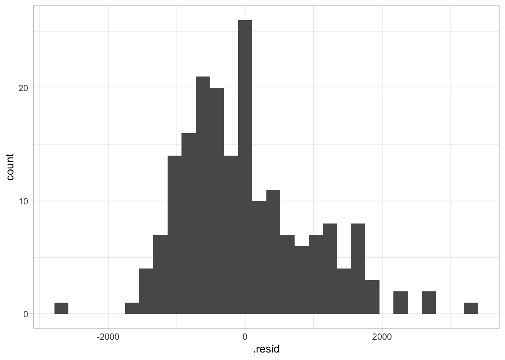

Chapter 5 Regression analysis
theme_light() %>% theme_set()
house_hex <- read_rds(here::here("project-data/house_hex.rds"))
theta <- read_rds(here::here("project-data/theta.rds"))
topic <- read_rds(here::here("project-data/topic.rds")) %>%
mutate(topic = paste("topic",topic, sep = "_"))5.1 Binding topic with housing
## Joining, by = "document"colnames(topic) <- paste( "topic", colnames(topic), sep = "_")
house_hex <- house_hex %>% left_join(topic, by = c("hex_id" = "topic_document")) %>%
filter(!is.na(topic_topic)) %>% rename(!!"topic":=topic_topic)
house_hex %>% tm_shape() + tm_polygons(col = "topic")
## hex_id mean_price mean_area mean_sqr_price mean_lease topic topic_1
## 1 167 346765.6 105.20312 3296.153 70.42188 topic_4 0.04075092
## 2 193 365440.9 101.13976 3613.227 75.32289 topic_6 0.24845406
## 3 205 395574.2 88.94545 4447.379 90.05455 topic_7 0.07038835
## 4 206 390642.3 117.43452 3326.469 74.70387 topic_5 0.06833333
## 5 218 455775.8 106.09975 4295.730 82.93682 topic_7 0.03409091
## 6 219 378439.8 107.05645 3534.956 82.97984 topic_5 0.03346995
## topic_2 topic_3 topic_4 topic_5 topic_6 topic_7 topic_8
## 1 0.07554945 0.02609890 0.57188645 0.07371795 0.10851648 0.0279304 0.07554945
## 2 0.03202297 0.01435512 0.18750000 0.13361307 0.21400177 0.1274293 0.04262367
## 3 0.08980583 0.08980583 0.07038835 0.08009709 0.07038835 0.4684466 0.06067961
## 4 0.06166667 0.06166667 0.05500000 0.42833333 0.06833333 0.1550000 0.10166667
## 5 0.03409091 0.03106061 0.04924242 0.03106061 0.04015152 0.7522727 0.02803030
## 6 0.27937158 0.04166667 0.03346995 0.21926230 0.02800546 0.3203552 0.044398915.2 Sample statistic
| Name | bind_data |
| Number of rows | 193 |
| Number of columns | 14 |
| _______________________ | |
| Column type frequency: | |
| character | 2 |
| numeric | 12 |
| ________________________ | |
| Group variables | None |
Variable type: character
| skim_variable | n_missing | complete_rate | min | max | empty | n_unique | whitespace |
|---|---|---|---|---|---|---|---|
| hex_id | 0 | 1 | 3 | 3 | 0 | 193 | 0 |
| topic | 0 | 1 | 7 | 7 | 0 | 7 | 0 |
Variable type: numeric
| skim_variable | n_missing | complete_rate | mean | sd | p0 | p25 | p50 | p75 | p100 | hist |
|---|---|---|---|---|---|---|---|---|---|---|
| mean_price | 0 | 1 | 461830.42 | 105766.21 | 260333.33 | 386485.98 | 438532.77 | 523440.25 | 787926.03 | ▂▇▃▂▁ |
| mean_area | 0 | 1 | 95.04 | 14.79 | 57.00 | 84.14 | 95.36 | 106.00 | 127.36 | ▂▅▇▇▃ |
| mean_sqr_price | 0 | 1 | 4916.61 | 1114.77 | 3296.15 | 4043.05 | 4589.79 | 5482.73 | 8770.76 | ▇▇▃▂▁ |
| mean_lease | 0 | 1 | 70.80 | 9.05 | 50.22 | 64.38 | 69.22 | 77.27 | 95.36 | ▂▇▆▅▁ |
| topic_1 | 0 | 1 | 0.07 | 0.07 | 0.01 | 0.03 | 0.05 | 0.08 | 0.51 | ▇▁▁▁▁ |
| topic_2 | 0 | 1 | 0.08 | 0.13 | 0.01 | 0.03 | 0.04 | 0.08 | 0.81 | ▇▁▁▁▁ |
| topic_3 | 0 | 1 | 0.07 | 0.11 | 0.00 | 0.02 | 0.04 | 0.07 | 0.63 | ▇▁▁▁▁ |
| topic_4 | 0 | 1 | 0.08 | 0.11 | 0.01 | 0.03 | 0.05 | 0.09 | 0.75 | ▇▁▁▁▁ |
| topic_5 | 0 | 1 | 0.24 | 0.28 | 0.00 | 0.03 | 0.08 | 0.48 | 0.89 | ▇▁▁▂▁ |
| topic_6 | 0 | 1 | 0.08 | 0.09 | 0.01 | 0.03 | 0.05 | 0.09 | 0.73 | ▇▁▁▁▁ |
| topic_7 | 0 | 1 | 0.24 | 0.24 | 0.00 | 0.05 | 0.14 | 0.39 | 0.88 | ▇▂▂▁▁ |
| topic_8 | 0 | 1 | 0.13 | 0.16 | 0.01 | 0.04 | 0.07 | 0.15 | 0.75 | ▇▁▁▁▁ |

topic 2 just very few and has been filtered by house_hex.
5.2.1 Compare mean price between topics
topic_mean <- bind_data %>%
filter(topic %in% c("topic_5", "topic_6")) %>%
group_by(topic) %>%
summarise(mean = mean(mean_sqr_price))
topic_mean## # A tibble: 2 x 2
## topic mean
## <chr> <dbl>
## 1 topic_5 4791.
## 2 topic_6 5378.ggplot() +
geom_histogram(
data = bind_data %>%
filter(topic %in% c("topic_5", "topic_6")),
mapping = aes(x = mean_sqr_price, group = topic, fill = topic),
position = position_dodge()
) +
geom_vline(
data = topic_mean,
mapping = aes(xintercept = mean, group = topic, color = topic)
)## `stat_bin()` using `bins = 30`. Pick better value with `binwidth`.
bind_data %>%
filter(topic == "topic_5") %>%
specify(response = mean_sqr_price) %>%
generate(reps = 100) %>%
calculate(stat = "mean") %>%
get_ci()## Setting `type = "bootstrap"` in `generate()`.## # A tibble: 1 x 2
## `2.5%` `97.5%`
## <dbl> <dbl>
## 1 4598. 5070.mean_diff <- bind_data %>%
filter(topic %in% c("topic_5", "topic_6")) %>%
specify(formula = mean_sqr_price ~ topic) %>%
calculate(stat = "diff in means", order = c("topic_5", "topic_6"))
mean_diff## # A tibble: 1 x 1
## stat
## <dbl>
## 1 -587.null_distribution <- bind_data %>%
filter(topic %in% c("topic_5", "topic_6")) %>%
specify(formula = mean_sqr_price ~ topic) %>%
hypothesize(null = "independence") %>%
generate(reps = 500, type = "permute") %>%
calculate(stat = "diff in means", order = c("topic_5", "topic_6"))
null_distribution %>%
visualise(bins = 100) +
shade_p_value(obs_stat = mean_diff, direction = "both")
## # A tibble: 1 x 1
## p_value
## <dbl>
## 1 05.3 Correlation
# arrange topic by mean price
sort_key <- bind_data %>% group_by(topic) %>% summarise(mean = mean(mean_sqr_price)) %>% arrange(mean) %>% mutate(rank = row_number()) %>% select(-mean)
topic_house <- bind_data %>%
left_join(sort_key) %>%
# mutate(topic = fct_reorder(topic, mean_sqr_price)) %>%
# mutate(topic = as.integer(str_extract(topic, "[0-9]"))) %>%
select(-hex_id)## Joining, by = "topic"## [1] 0.3050962Shows a weak correlation.
5.4 Regression
## # A tibble: 1 x 11
## r.squared adj.r.squared sigma statistic p.value df logLik AIC BIC
## <dbl> <dbl> <dbl> <dbl> <dbl> <int> <dbl> <dbl> <dbl>
## 1 0.00187 -0.00336 1117. 0.357 0.551 2 -1627. 3261. 3270.
## # … with 2 more variables: deviance <dbl>, df.residual <int>## # A tibble: 1 x 11
## r.squared adj.r.squared sigma statistic p.value df logLik AIC BIC
## <dbl> <dbl> <dbl> <dbl> <dbl> <int> <dbl> <dbl> <dbl>
## 1 0.0901 0.0805 1069. 9.41 1.27e-4 3 -1618. 3245. 3258.
## # … with 2 more variables: deviance <dbl>, df.residual <int>ols <- lm(mean_sqr_price ~ mean_lease + topic + topic_1 + topic_2 + topic_3 + topic_4 + topic_5 + topic_6 + topic_6 + topic_7 + topic_8, topic_house)
glance(ols)## # A tibble: 1 x 11
## r.squared adj.r.squared sigma statistic p.value df logLik AIC BIC
## <dbl> <dbl> <dbl> <dbl> <dbl> <int> <dbl> <dbl> <dbl>
## 1 0.275 0.218 986. 4.82 1.69e-7 15 -1596. 3225. 3277.
## # … with 2 more variables: deviance <dbl>, df.residual <int>## # A tibble: 15 x 5
## term estimate std.error statistic p.value
## <chr> <dbl> <dbl> <dbl> <dbl>
## 1 (Intercept) 6673. 893. 7.47 3.39e-12
## 2 mean_lease 1.83 8.29 0.220 8.26e- 1
## 3 topictopic_3 -522. 780. -0.669 5.04e- 1
## 4 topictopic_4 1130. 642. 1.76 8.02e- 2
## 5 topictopic_5 358. 520. 0.689 4.92e- 1
## 6 topictopic_6 642. 514. 1.25 2.13e- 1
## 7 topictopic_7 34.5 548. 0.0630 9.50e- 1
## 8 topictopic_8 -739. 578. -1.28 2.03e- 1
## 9 topic_1 -3563. 1292. -2.76 6.42e- 3
## 10 topic_2 -2974. 778. -3.82 1.82e- 4
## 11 topic_3 -1355. 1036. -1.31 1.92e- 1
## 12 topic_4 -2131. 884. -2.41 1.69e- 2
## 13 topic_5 -2900. 516. -5.62 7.36e- 8
## 14 topic_6 -1230. 954. -1.29 1.99e- 1
## 15 topic_7 -2624. 633. -4.15 5.22e- 5topic_ols <- augment(ols, data = topic_house)
topic_ols %>%
ggplot(aes(x = .resid)) +
geom_histogram(bins = 30)